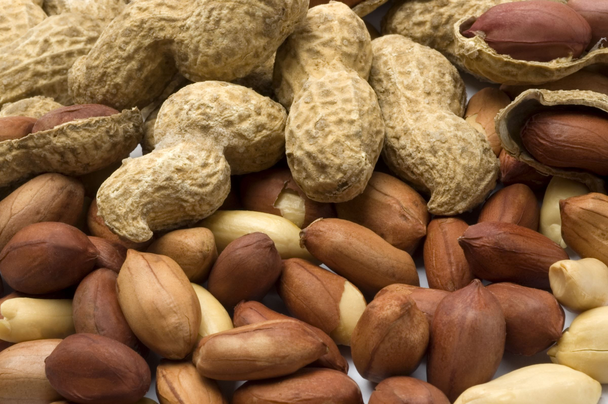
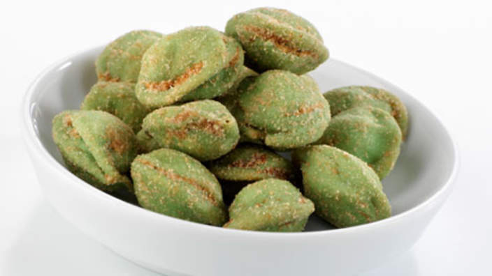
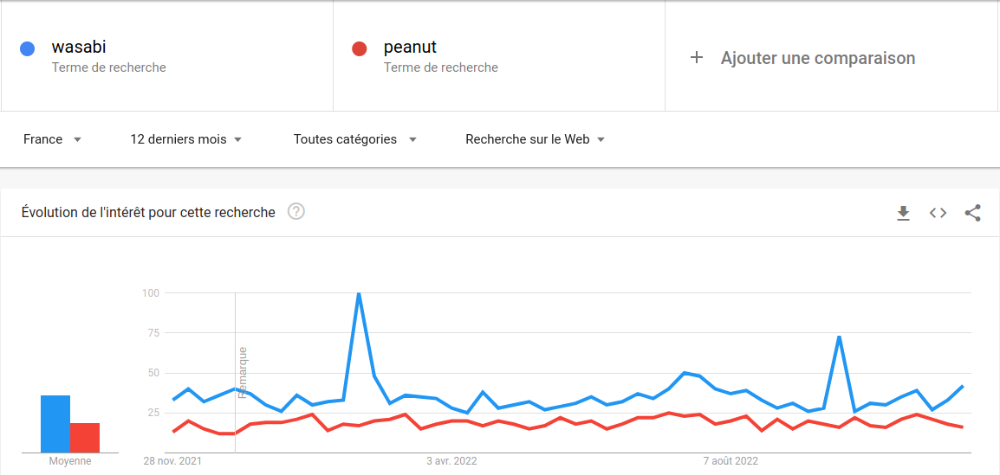
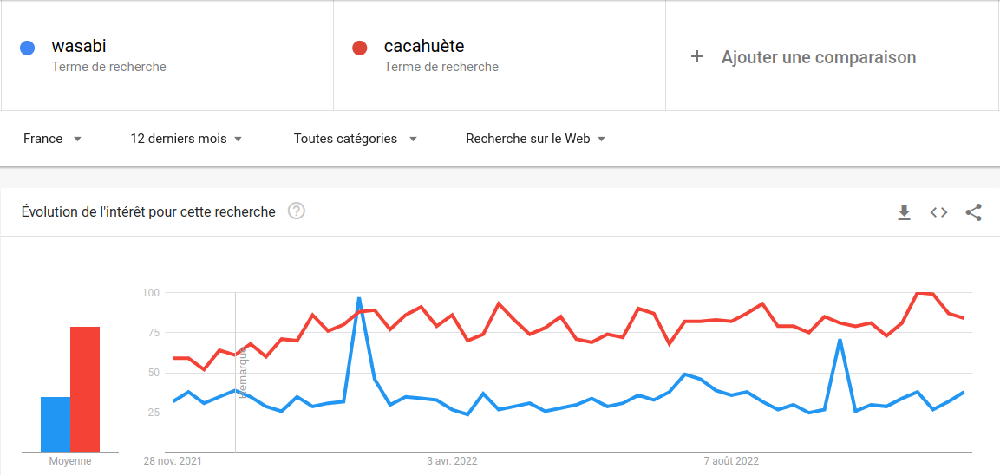

Bienvenue sur ce site consacré à 100% aux cacahuètes au wasabi et au bonheur procuré suite à la sustentaion de ces dernières.

Les cacahuètes au wasabi sont issu de deux denrées : les cacahuètes et le wasabi. Les cacahuètes sont des
fruits ou graines de l’arachide, dont on extrait
de l’huile ou que l’on consomme torréfié (d'après le wikitionnaire).
Exemple : "Ces cacahuètes sont douces et vraiment délicieuces, j'adore en manger !"
Ceci est peut être un placement de produit

L'eutrema japonicum (du latin wasabium), quand à lui, est une espèce de plante que l'on trouve en Asie.
Aussi appelé moutarde japonaise ou raifort japonais.
En bref, ça arrache.
(toujours d'après wikipédia).
Exemple : "Tu vois ce truc vert là ? C'est pas Hulk mais ça va t'arracher"

Sur ce graphique détaillé (tiré directement de Google Trend), on observe que le wasabi est bien plus
tendance que les peanuts
(cacahuètes en anglais d'après reverso). Par conséquent,
les lobbies de la cacahuètes ont décidé de créer un tout nouveau produit : les cacahuètes au wasabi.
L'ancien temps mélangé à la tendance actuelle.
Ci-dessous la preuve en image (j'avoue c'est une capture d'écran).
On ne prêtera pas attention au Google Trend du wasabi et des cacahuètes..... L'étude de marché était pourtant formelle ! 